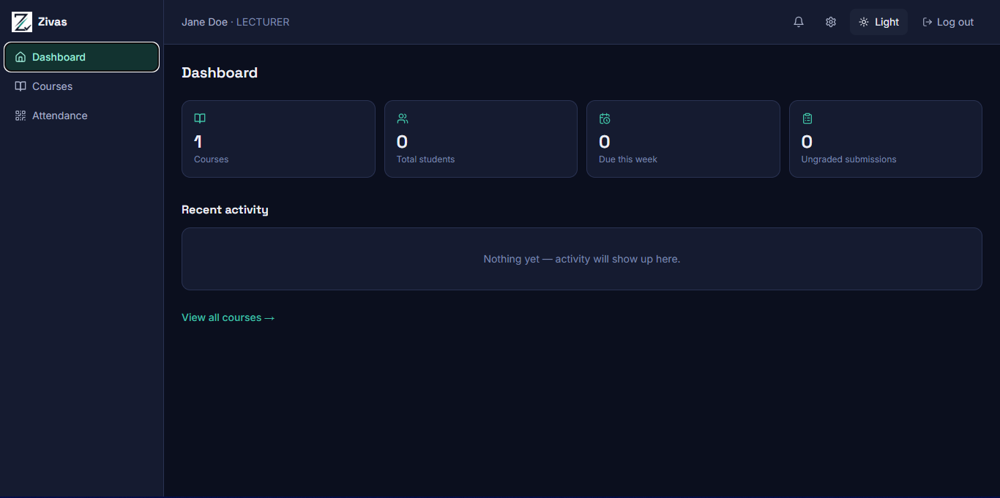

More time for teaching. Less time coordinating the process.
ZIVAS helps independent tutors and institutional lecturers organise their course activity, collect student work and understand progress.
Book a demo ↗Your course, organised around the teaching week.
- Set up courses and weekly learning activities
- Share resources and communicate course updates
- Publish assignments and review submissions
- Run attendance sessions and classroom quizzes
- Review learner progress and published grades

Understand the class without building reports by hand.
Course and student views bring together submission, attendance and grade information to support day-to-day teaching decisions.
Instead of checking separate records for every routine task, lecturers can use the course workspace to follow the work students have submitted, review attendance activity and see grades that have been released.

Keep assessment and feedback connected
Assignments give lecturers a place to set work and receive student submissions. After reviewing a submission, the lecturer can record a grade and feedback and control when the result is published to the learner.
Course quizzes and attendance activities support the teaching process alongside assignments. Together, these workflows make it easier to follow participation and the work completed across a course.
Designed for independent tutors and institutions
ZIVAS supports independent educators as well as lecturers working within an institution. The surrounding academic structure may differ, but the goal remains the same: keep course resources, learner activity, assessment and progress in a focused workspace.
For a guided walkthrough, bring the course structure and teaching routines you want to organise. The demonstration can focus on the workflows relevant to your teaching context.
See how teaching workflows connect
Explore the course, assignment, attendance and assessment capabilities, or see how students access course activity and follow released feedback.